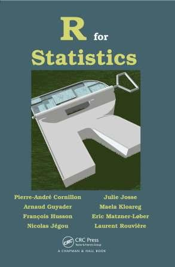

|
 |
 |
 |
 |
 |
 |
| 2018 | 2nd ed: 2017 1st ed: 2011 |
2nd ed: 2016 1st ed: 2009 |
2nd ed: 2013 1st ed: 2005 |
2013 | 3rd ed: 2012 2nd ed: 2010 1st ed: 2008 |
2012 |
| Packages: | ||||||
- Available to supervise a PhD student who would have his funding (bourse Cifre par exemple)
- Mar 2021: MOOC on Exploratory Multivariate Data Analysis - 8th session: Enroll now
- Mar 2021 : MOOC d'analyse des données multidimensionnelles - 8e session : Inscrivez-vous
- Dec 2020: The version 2.2 of the packages FactoMineR and Factoshiny: This video shows PCA done with Factoshiny
- Oct 2018: French book R pour la statistique et la science de données. informations, commander
- Blog on missing values and Exploratory Multivariate Data Analysis.
- Directeur de la collection Pratique de la statistique aux Presses Universitaires de Rennes (since Mar 2012)
- Membre du comité éditorial de la collection Pratique R (collection statistique avec R de chez EDP, since Nov 2009)
- Editeur associé du Journal de la Société Française de Statistique (since Feb 2014)
Cours complets en analyse de données - Data Analysis - planification expérimentale - sensométrie - modèle linéaire
- MOOC d'analyse de données (24h) : Vidéos + diapos + tuto R + quiz + exercices
- MOOC on Exploratory data analysis (24h): Videos + slides + quiz + exercises + R tuto
- Cours sur les plans d'expériences (24h) : Vidéos + diapos + exercices + études de cas
- Cours de sensométrie (24h) : Vidéos + diapos + quiz + exercices + études de cas
- Cours de régression multiple (2h) : vidéo - diaporama
- Cours d'analyse de variance (2h): vidéo - diaporama